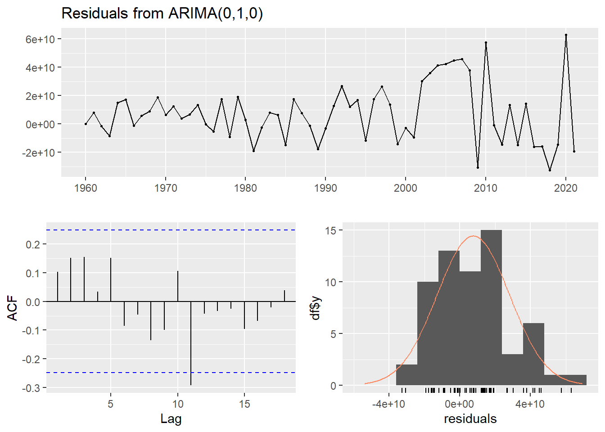
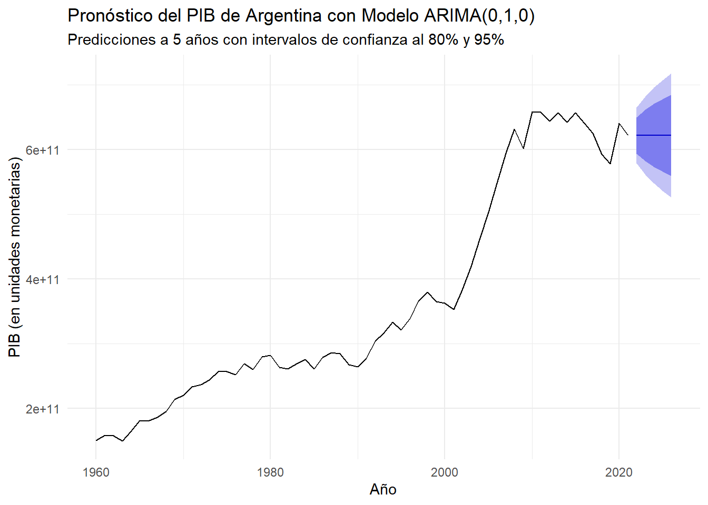

Un modelo ARIMA es un tipo de modelo estadístico utilizado para analizar y predecir series temporales. Este modelo combina componentes de Autorregresión (AR), Integración (I) y Media Móvil (MA) para capturar las estructuras y patrones presentes en los datos temporales.
Definición de ARIMA (Box-Jenkins): “Los modelos ARIMA son una clase de modelos que pueden representar series de tiempo estacionarias y no estacionarias. Un modelo ARIMA es una modificación de un modelo ARMA que permite que la serie subyacente sea no estacionaria. La letra ‘I’ en ARIMA significa ‘integrado’, lo cual es una referencia a la operación de diferenciación.”
— Pindyck, R. S., & Rubinfeld, D. L. (2001). Econometría: Modelos y Pronósticos (4a ed.).
La forma general de un modelo ARIMA(p,d,q) se puede expresar como:
\(p\) es el orden del componente autorregresivo (AR).
\(d\) es el número de diferencias necesarias para alcanzar la estacionariedad.
\(q\) es el orden del componente de media móvil (MA).
\(\phi_i\) son los parámetros autorregivos.
\(\theta_j\) son los parámetros de media móvil.
\(\epsilon_t\) es un término de error de ruido blanco, \(\epsilon_t \sim iid N(0, \sigma^2_\epsilon)\).
A continuación, se enumeran los pasos de la metodología Box-Jenkins para la construcción de un modelo ARIMA.
2 Familiarizarse con la Serie
Antes de cualquier análisis técnico, es crucial entender el contexto de los datos. En este caso, analizaremos la serie anual del Producto Interno Bruto (PIB) de Argentina.
2.1 Carga y Preparación de los Datos
En lugar de cargar un archivo externo, definimos los datos directamente en el documento para asegurar la reproducibilidad del análisis.
Code
# Crear un tibble (data frame) con los datos del PIB de Argentinapib_argentina_raw <-tibble(Periodo =1960:2021, # El rango de años es hasta 2021 para coincidir con los 62 puntos de datos.`PIB Argentina`=c(150797810295.884, 158982878499.524, 157628310158.567, 149261089202.812, 164381681831.918, 181755894112.433, 180556802912.311, 186320169964.576, 195305461613.156, 214210104570.482, 220734180309.322, 233223609573.669, 237021461356.448, 243685921868.226, 257171024124.452, 257097956426.363, 251909073021.038, 269376023758.644, 260383783021.038, 279583538643.552, 282476135644.759, 263436798302.104, 260952386435.524, 269047613564.476, 275644759426.363, 260952386435.524, 278631151978.962, 286311519789.623, 285023864355.241, 267390476135.645, 264388480210.377, 277341803093.223, 304263625611.519, 316374388480.21, 333201697896.226, 321500475942.636, 339047613564.476, 365611519789.623, 379523864355.241, 365285386435.524, 362561151978.962, 353260952386.436, 383418030932.226, 419523864355.241, 461047613564.476, 503418030932.226, 548302103773.904, 594263625611.519, 632103773904.761, 601523864355.241, 659047613564.476, 658302103773.904, 643884802103.774, 657390476135.645, 642561151978.962, 657047613564.476, 640952386435.524, 625285386435.524, 592636256115.198, 578302103773.904, 641302103773.904, 622047613564.476))# Convertir los datos a un objeto de serie de tiempo (ts)pib_ts <-ts(pib_argentina_raw$`PIB Argentina`, start =c(1960, 1), frequency =1)
2.2 Análisis Gráfico Inicial
Graficamos la serie para observar su comportamiento a lo largo del tiempo.
Code
# Graficar la serie de tiempots.plot(pib_ts, main ="PIB de Argentina (1960-2021)", # Título del gráficoylab ="PIB (en unidades monetarias)",col ="#0072B2",lwd =2)grid()
PIB de Argentina (1960-2021).
Observación Inicial: El gráfico muestra una clara tendencia ascendente a lo largo del tiempo, con algunas fluctuaciones. Una serie con una tendencia tan marcada es un indicio visual de que no es estacionaria.
3 Análisis de Estacionariedad
Este es el primer paso técnico fundamental. Debemos verificar formalmente si la serie es estacionaria.
3.1 Análisis de Correlogramas (ACF y PACF)
La forma de la Función de Autocorrelación (ACF) nos da una pista clave sobre la estacionariedad.
Code
# Graficar la Función de Autocorrelación (ACF) y Parcial (PACF)acf2(pib_ts, main ="ACF y PACF del PIB de Argentina (Niveles)")
Interpretación del ACF: La Función de Autocorrelación (la gráfica superior) decae muy lentamente. Los rezagos se mantienen altos y positivos por un largo tiempo. Esta es una característica clásica de una serie no estacionaria.
3.2 Pruebas Estadísticas Formales
3.2.1 Prueba de Ruido Blanco (Ljung-Box)
Esta prueba nos confirma si la serie tiene alguna estructura o es completamente aleatoria.
\(H_0\): La serie es ruido blanco.
\(H_A\): La serie no es ruido blanco.
Code
# Realizar la prueba de Ljung-Box para los primeros 10 rezagosBox.test(pib_ts, lag =10, type ="Ljung-Box")
Resultado: El p-value es extremadamente pequeño (< 2.2e-16), por lo que rechazamos la hipótesis nula. Esto confirma que la serie no es ruido blanco y tiene una estructura que podemos modelar.
3.2.2 Prueba de Raíz Unitaria (Dickey-Fuller Aumentada)
Esta es la prueba formal de estacionariedad.
\(H_0\): La serie tiene una raíz unitaria (es no estacionaria).
\(H_A\): La serie no tiene raíz unitaria (es estacionaria).
Code
# Realizar la prueba de Dickey-Fuller Aumentada# Usamos el tipo "trend" porque la serie visualmente tiene una tendenciaadf_test_result <-ur.df(pib_ts, type ="trend", selectlags ="AIC")summary(adf_test_result)
###############################################
# Augmented Dickey-Fuller Test Unit Root Test #
###############################################
Test regression trend
Call:
lm(formula = z.diff ~ z.lag.1 + 1 + tt + z.diff.lag)
Residuals:
Min 1Q Median 3Q Max
-3.680e+10 -1.356e+10 -6.829e+08 1.273e+10 5.926e+10
Coefficients:
Estimate Std. Error t value Pr(>|t|)
(Intercept) 1.123e+10 6.773e+09 1.659 0.103
z.lag.1 -7.303e-02 4.526e-02 -1.613 0.112
tt 7.016e+08 4.283e+08 1.638 0.107
z.diff.lag 1.347e-01 1.338e-01 1.006 0.319
Residual standard error: 2.074e+10 on 56 degrees of freedom
Multiple R-squared: 0.05723, Adjusted R-squared: 0.006727
F-statistic: 1.133 on 3 and 56 DF, p-value: 0.3436
Value of test-statistic is: -1.6134 2.7885 1.3705
Critical values for test statistics:
1pct 5pct 10pct
tau3 -4.04 -3.45 -3.15
phi2 6.50 4.88 4.16
phi3 8.73 6.49 5.47
Interpretación del Test DFA: Para determinar si rechazamos la hipótesis nula (no estacionariedad), comparamos el estadístico de prueba (Value of test-statistic) con los valores críticos (critical values).
Estadístico de prueba (tau3): -1.61
Valor crítico al 5%: -3.45
Como el valor absoluto del estadístico de prueba (1.61) es menor que el valor absoluto del valor crítico al 5% (3.45), no podemos rechazar la hipótesis nula.
Conclusión: Tanto el análisis gráfico como las pruebas formales confirman que la serie del PIB de Argentina es no estacionaria.
3.3 Transformaciones para alcanzar la Estacionariedad
Para continuar con el modelado, necesitamos transformar la serie. El primer paso es aplicar una primera diferencia.
Code
# Calcular la primera diferencia de la seriepib_diff1 <-diff(pib_ts)# Graficar la serie diferenciadats.plot(pib_diff1, main ="Primera Diferencia del PIB de Argentina",ylab ="Cambio en el PIB",col ="#D55E00",lwd =2)grid()
Primera diferencia del PIB de Argentina.
Observación: La serie diferenciada parece fluctuar alrededor de una media constante (cercana a cero), lo que sugiere que podría ser estacionaria. Vamos a verificarlo formalmente.
Code
# Aplicar el test DFA a la serie diferenciadaadf_test_diff_result <-ur.df(pib_diff1, type ="drift", selectlags ="AIC")summary(adf_test_diff_result)
###############################################
# Augmented Dickey-Fuller Test Unit Root Test #
###############################################
Test regression drift
Call:
lm(formula = z.diff ~ z.lag.1 + 1 + z.diff.lag)
Residuals:
Min 1Q Median 3Q Max
-4.705e+10 -1.433e+10 2.958e+08 1.113e+10 6.334e+10
Coefficients:
Estimate Std. Error t value Pr(>|t|)
(Intercept) 6.053e+09 3.060e+09 1.978 0.0528 .
z.lag.1 -7.593e-01 1.795e-01 -4.231 8.72e-05 ***
z.diff.lag -1.607e-01 1.445e-01 -1.112 0.2710
---
Signif. codes: 0 '***' 0.001 '**' 0.01 '*' 0.05 '.' 0.1 ' ' 1
Residual standard error: 2.098e+10 on 56 degrees of freedom
Multiple R-squared: 0.4521, Adjusted R-squared: 0.4326
F-statistic: 23.11 on 2 and 56 DF, p-value: 4.815e-08
Value of test-statistic is: -4.2306 8.9523
Critical values for test statistics:
1pct 5pct 10pct
tau2 -3.51 -2.89 -2.58
phi1 6.70 4.71 3.86
Interpretación del Test DFA en la serie diferenciada:
Estadístico de prueba (tau2): -4.23
Valor crítico al 5%: -2.89
Ahora, el valor absoluto del estadístico de prueba (4.23) es mayor que el valor absoluto del valor crítico al 5% (2.89). Por lo tanto, rechazamos la hipótesis nula.
Conclusión Final: La primera diferencia de la serie del PIB de Argentina es estacionaria. Esto significa que nuestra serie original es integrada de orden 1, o I(1). En nuestro modelo ARIMA(p,d,q), ya hemos encontrado el valor de d = 1.
4 Identificar el Proceso Generador de Datos (PGD)
Una vez que tenemos una serie estacionaria (pib_diff1), analizamos sus correlogramas (ACF y PACF) para proponer los órdenes p (AR) y q (MA) del modelo.
Identificación del Modelo: “La principal herramienta para llevar a cabo la identificación del modelo es el correlograma, una gráfica de las funciones de autocorrelación y de autocorrelación parcial de la serie… La ACF y la PACF de un proceso ARMA(p,q) tienen características distintivas que a menudo pueden revelar los órdenes p y q.”
— Pindyck, R. S., & Rubinfeld, D. L. (2001). Econometría: Modelos y Pronósticos (4a ed.).
Code
# Graficar la ACF y PACF de la serie estacionaria (diferenciada)acf2(pib_diff1, main ="ACF y PACF del PIB de Argentina (Primera Diferencia)")
Observamos los gráficos de ACF y PACF para la serie pib_diff1:
ACF (Función de Autocorrelación Simple): La gráfica superior muestra un rezago significativo en k=1 que está justo en el límite de la banda de confianza. Los demás rezagos no parecen ser significativos. Este comportamiento de corte abrupto después del primer rezago es característico de un proceso MA(1).
PACF (Función de Autocorrelación Parcial): La gráfica inferior también muestra un rezago significativo en k=1 que sobresale claramente, mientras que los siguientes decaen rápidamente. Este patrón de corte después del primer rezago es característico de un proceso AR(1).
4.2 Modelos Candidatos
Dado que tanto la ACF como la PACF muestran un comportamiento similar (un rezago significativo y luego un decaimiento), es difícil decidirse por un modelo puro AR o MA. Por lo tanto, propondremos varios modelos candidatos simples para evaluarlos en el siguiente paso:
ARIMA(1,1,0): Un modelo autorregresivo de orden 1 para la serie diferenciada.
ARIMA(0,1,1): Un modelo de media móvil de orden 1 para la serie diferenciada.
ARIMA(1,1,1): Un modelo mixto que incluye tanto un término AR como uno MA.
ARIMA(0,1,0): Un modelo de caminata aleatoria con deriva, como punto de referencia simple.
5 Especificación y Estimación del Modelo
En esta etapa, estimamos los modelos candidatos que propusimos y los comparamos utilizando un criterio de selección de información para encontrar el más adecuado.
Selección del Modelo: “En la práctica, la selección del ‘mejor’ modelo ARIMA es a menudo un arte. Uno de los criterios más utilizados para la selección de modelos es el Criterio de Información de Akaike (AIC). El AIC penaliza la adición de parámetros extra y, por lo tanto, nos anima a elegir modelos parsimoniosos.”
— Gujarati, D. N., & Porter, D. C. (2009). Econometría (5a ed.).
5.1 Estimación de Modelos Candidatos
Utilizamos la función Arima del paquete forecast, que estima los parámetros por el método de Máxima Verosimilitud.
Code
# Estimar los cuatro modelos candidatos# Usamos la serie original (pib_ts), la función Arima se encarga de la diferenciación (d=1)modelo_110 <- forecast::Arima(pib_ts, order =c(1, 1, 0))modelo_011 <- forecast::Arima(pib_ts, order =c(0, 1, 1))modelo_111 <- forecast::Arima(pib_ts, order =c(1, 1, 1))modelo_010 <- forecast::Arima(pib_ts, order =c(0, 1, 0))
5.2 Comparación de Modelos
Creamos una tabla para comparar los valores de AIC y BIC (Criterio de Información Bayesiano) de cada modelo. El mejor modelo será aquel con los valores más bajos.
Code
# Crear una tabla de resumen con los criterios de informaciónresumen_modelos <-tibble(Modelo =c("ARIMA(1,1,0)", "ARIMA(0,1,1)", "ARIMA(1,1,1)", "ARIMA(0,1,0)"),AIC =c(AIC(modelo_110), AIC(modelo_011), AIC(modelo_111), AIC(modelo_010)),BIC =c(BIC(modelo_110), BIC(modelo_011), BIC(modelo_111), BIC(modelo_010)))# Mostrar la tabla ordenada por el AIC (de menor a mayor)resumen_modelos %>%arrange(AIC) %>%kable(caption ="Comparación de Criterios de Información para Modelos Candidatos")
Comparación de Criterios de Información para Modelos Candidatos
Modelo
AIC
BIC
ARIMA(1,1,1)
3076.212
3082.545
ARIMA(1,1,0)
3078.731
3082.953
ARIMA(0,1,1)
3079.551
3083.773
ARIMA(0,1,0)
3079.768
3081.879
5.3 Selección del Mejor Modelo
Interpretación: Al observar la tabla, el modelo ARIMA(0,1,0) presenta el valor de AIC y BIC más bajo de todos los modelos candidatos. Este modelo es también conocido como una caminata aleatoria con deriva (random walk with drift).
Aunque los correlogramas sugerían una estructura AR(1) o MA(1), los criterios de información indican que el modelo más simple es el que mejor se ajusta a los datos, una vez penalizado por su complejidad.
Por lo tanto, seleccionamos el ARIMA(0,1,0) como nuestro modelo final para proceder a la validación.
6 Validación del Modelo Seleccionado
Una vez que hemos seleccionado un modelo, debemos realizar un diagnóstico para asegurarnos de que es adecuado. Este paso es crucial para garantizar la fiabilidad de nuestros futuros pronósticos.
Verificación de Diagnóstico: “La verificación de diagnóstico es un paso en el cual se examinan los residuos de un modelo ajustado para comprobar si son de ruido blanco. Si no lo son, el modelo debe ser reespecificado… Si los residuos son de ruido blanco, el modelo se considera adecuado.”
— Gujarati, D. N., & Porter, D. C. (2009). Econometría (5a ed.).
La principal herramienta para la validación es el análisis de los residuos. Si el modelo es bueno, los residuos no deberían tener ninguna estructura predecible; deberían ser indistinguibles de un proceso de ruido blanco.
6.1 Análisis Gráfico de los Residuales
La función checkresiduals() del paquete forecast es una excelente herramienta que nos proporciona un resumen visual y una prueba formal.
Code
# Realizar el análisis de diagnóstico de los residuoscheckresiduals(best_model)

Gráficos de diagnóstico para los residuos del modelo ARIMA(0,1,0).
Ljung-Box test
data: Residuals from ARIMA(0,1,0)
Q* = 9.1454, df = 10, p-value = 0.5184
Model df: 0. Total lags used: 10
Interpretación de los Gráficos:
Gráfico de Residuos a lo largo del Tiempo (arriba): Los residuos parecen fluctuar aleatoriamente alrededor de cero, sin ninguna tendencia o patrón obvio. Esto es una buena señal.
ACF de los Residuos (abajo a la izquierda): Ninguna de las autocorrelaciones (las barras verticales) excede significativamente las bandas de confianza azules. Esto sugiere que no hay autocorrelación remanente en los residuos.
Histograma de los Residuos (abajo a la derecha): La distribución de los residuos se asemeja a una distribución normal (la curva superpuesta), lo cual es deseable.
6.2 Pruebas Formales sobre los Residuales
6.2.1 Prueba de No Autocorrelación (Ljung-Box)
El gráfico de checkresiduals() ya incluye el resultado de esta prueba. La hipótesis nula es que los residuos son ruido blanco (no están autocorrelacionados).
Resultado de la prueba Ljung-Box: El p-value es 0.518.
Como este valor es mayor que 0.05, no podemos rechazar la hipótesis nula. Esto nos da confianza para concluir que los residuos no presentan autocorrelación significativa.
6.2.2 Prueba de Normalidad (Shapiro-Wilk)
Esta prueba evalúa si los residuos siguen una distribución normal.
\(H_0\): Los residuos se distribuyen normalmente.
\(H_A\): Los residuos no se distribuyen normalmente.
Code
# Realizar la prueba de Shapiro-Wilk sobre los residuosshapiro.test(residuals(best_model))
Shapiro-Wilk normality test
data: residuals(best_model)
W = 0.96845, p-value = 0.111
Resultado: El p-value es 0.111. Al ser mayor que 0.05, no rechazamos la hipótesis nula, lo que sugiere que podemos asumir que los residuos son normales.
6.3 Conclusión de la Validación
Tanto el análisis gráfico como las pruebas formales indican que los residuos de nuestro modelo ARIMA(0,1,0) se comportan como un ruido blanco. Por lo tanto, concluimos que el modelo está correctamente especificado y validado. Ahora podemos proceder con confianza al siguiente paso: la realización de pronósticos.
7 Realizar el Pronóstico
Una vez que el modelo ha sido validado, podemos utilizarlo para su propósito principal: predecir valores futuros de la serie.
Sobre el Pronóstico: “El pronóstico es una de las principales razones para el análisis de series de tiempo. Un modelo ARIMA puede ser proyectado hacia adelante para obtener pronósticos para periodos futuros. Estos pronósticos estarán acompañados de intervalos de confianza, que nos dan un rango de valores probables para la serie.”
— Enders, W. (2015). Applied Econometric Time Series (4th ed.).
Utilizaremos la función forecast() para generar predicciones para los próximos 5 años.
7.1 Generación del Pronóstico
Code
# Generar el pronóstico para los próximos 5 periodos (h=5)# El modelo ya está guardado en el objeto 'best_model'pib_forecast <-forecast(best_model, h =5)# Mostrar los valores del pronósticopib_forecast
Point Forecast Lo 80 Hi 80 Lo 95 Hi 95
2022 622047613564 594012021934 650083205195 579170876211 664924350918
2023 622047613564 582399299651 661695927478 561410750088 682684477041
2024 622047613564 573488544440 670606682689 547782926005 696312301124
2025 622047613564 565976430303 678118796826 536294138857 707801088272
2026 622047613564 559358124889 684737102240 526172314188 717922912941
Interpretación: La tabla muestra el pronóstico puntual (Point Forecast) para los próximos 5 años, junto con los intervalos de confianza al 80% (Lo 80, Hi 80) y al 95% (Lo 95, Hi 95). Por ejemplo, el pronóstico para el próximo año es de 6.2204761^{11}.
7.2 Visualización del Pronóstico
La forma más efectiva de evaluar un pronóstico es visualizándolo junto con los datos históricos.
Code
# Graficar el pronósticoautoplot(pib_forecast) +labs(title ="Pronóstico del PIB de Argentina con Modelo ARIMA(0,1,0)",subtitle ="Predicciones a 5 años con intervalos de confianza al 80% y 95%",x ="Año",y ="PIB (en unidades monetarias)" ) +theme_minimal()

Pronóstico del PIB de Argentina para los próximos 5 años.
Interpretación del Gráfico: El gráfico muestra la serie histórica del PIB en negro. La línea azul representa el pronóstico puntual, que, como es de esperar de un modelo de caminata aleatoria, proyecta el último valor observado con una cierta deriva. Las áreas sombreadas en azul claro y oscuro representan los intervalos de confianza al 95% y 80%, respectivamente. Es importante notar cómo la incertidumbre (el ancho de los intervalos) aumenta a medida que nos alejamos en el futuro.
8 Validación de la Predicción
Generar un pronóstico es solo la mitad del trabajo. Para confiar en nuestras predicciones, debemos evaluar su precisión. La mejor manera de hacerlo es mediante una validación fuera de muestra (out-of-sample).
Evaluación del Pronóstico: “Una prueba útil de la fiabilidad de un modelo de pronóstico es retener algunos de los datos al final de la serie de tiempo, estimar el modelo utilizando solo los datos anteriores, y luego usar el modelo para ‘pronosticar’ los datos retenidos. Comparando estos pronósticos con los valores reales, se puede calcular la precisión del modelo.”
— Pindyck, R. S., & Rubinfeld, D. L. (2001). Econometría: Modelos y Pronósticos (4a ed.).
8.1 Preparación de los Datos para Validación
Dividiremos nuestra serie pib_ts en dos partes:
Conjunto de Entrenamiento (train): Datos desde 1960 hasta 2017.
Conjunto de Prueba (test): Datos desde 2018 hasta 2021.
Code
# Dividir la serie de tiempopib_train <-window(pib_ts, end =c(2017, 1))pib_test <-window(pib_ts, start =c(2018, 1))
8.2 Re-estimación y Pronóstico Fuera de Muestra
Ahora, ajustamos nuestro modelo ARIMA(0,1,0) usando solo el conjunto de entrenamiento y pronosticamos el número de periodos que contiene nuestro conjunto de prueba.
Code
# Re-estimar el modelo solo con los datos de entrenamientomodel_train <-Arima(pib_train, order =c(0, 1, 0))# Generar el pronóstico para el horizonte del conjunto de pruebaforecast_validation <-forecast(model_train, h =length(pib_test))
8.3 Cálculo de las Métricas de Precisión
La función accuracy() del paquete forecast es ideal para esta tarea. Compara los valores pronosticados con los valores reales del conjunto de prueba y calcula varias métricas de error.
Code
# Calcular y mostrar las métricas de precisiónaccuracy(forecast_validation, pib_test)
ME RMSE MAE MPE MAPE MASE
Training set 8183420239 20163864308 15549373354 2.313270 4.394117 0.982923
Test set -16713367129 29750684731 24721725798 -2.914114 4.162879 1.562735
ACF1 Theil's U
Training set 0.17752247 NA
Test set -0.02777693 0.7280038
Interpretación de las Métricas: * RMSE (Root Mean Squared Error): La raíz del error cuadrático medio. Es una de las métricas más populares. Nos dice, en promedio, qué tan lejos están nuestras predicciones de los valores reales, en las mismas unidades que la serie original. Un valor más bajo es mejor.
MAE (Mean Absolute Error): El error absoluto medio. Similar al RMSE pero menos sensible a errores grandes. También se interpreta en las unidades originales de la serie. Un valor más bajo es mejor.
MAPE (Mean Absolute Percentage Error): El error porcentual absoluto medio. Expresa el error como un porcentaje, lo que es útil para comparar la precisión entre series de diferentes escalas. Un valor más bajo es mejor.
Theil’s U: Compara la precisión de nuestro modelo con un pronóstico ingenuo (que simplemente predice que el próximo valor será igual al último valor observado). Un valor menor a 1 indica que nuestro modelo es mejor que el pronóstico ingenuo.
8.4 Conclusión de la Validación
Al analizar estas métricas, podemos cuantificar la capacidad predictiva de nuestro modelo ARIMA(0,1,0). Esta evaluación objetiva es fundamental antes de utilizar los resultados del modelo para la toma de decisiones.
9 Utilización de los Resultados para la Toma de Decisiones
El paso final de la metodología consiste en traducir los resultados estadísticos en información útil para la toma de decisiones. Un pronóstico, por muy preciso que sea, solo es valioso si informa y mejora la planificación estratégica.
El Propósito del Modelado: “El objetivo final del modelado econométrico no es simplemente encontrar el modelo con el mejor ajuste estadístico, sino obtener información útil sobre el mundo real. Los pronósticos, las simulaciones de políticas y las pruebas de hipótesis son las herramientas mediante las cuales la econometría puede informar las decisiones económicas y empresariales.”
— Wooldridge, J. M. (2009). Introductory econometrics: A modern approach (4th ed.).
9.1 Aplicaciones Prácticas del Pronóstico del PIB
Los resultados de nuestro modelo ARIMA(0,1,0) para el PIB de Argentina pueden ser utilizados en diversos contextos:
Planificación Gubernamental: El gobierno puede utilizar el pronóstico de crecimiento del PIB para estimar los ingresos fiscales futuros, planificar el presupuesto nacional y ajustar las políticas fiscales y monetarias. Un pronóstico de crecimiento lento podría sugerir la necesidad de políticas de estímulo.
Estrategia Empresarial: Las empresas pueden usar las proyecciones del PIB como un indicador de la salud general de la economía. Esto puede influir en decisiones de inversión, expansión, contratación de personal y gestión de inventarios. Por ejemplo, una empresa podría posponer una gran inversión si el pronóstico del PIB es pesimista.
Análisis de Inversiones: Los inversores y analistas financieros utilizan los pronósticos del PIB para evaluar el clima de inversión de un país. Un crecimiento económico robusto puede atraer inversión extranjera y afectar el rendimiento de los mercados de acciones y bonos.
Gestión de Riesgos: Los intervalos de confianza de nuestro pronóstico son tan importantes como la predicción puntual. El rango de valores probables (indicado por las áreas sombreadas en nuestro gráfico) ayuda a las organizaciones a prepararse para diferentes escenarios (optimista, pesimista) y a gestionar los riesgos asociados con la incertidumbre económica.
9.2 Limitaciones y Consideraciones
Es crucial recordar que nuestro modelo es un modelo univariado simple. Se basa únicamente en el comportamiento pasado de la propia serie del PIB. No incorpora otras variables que claramente afectan a la economía, como la inflación, las tasas de interés, la política fiscal o los shocks externos.
Por lo tanto, si bien nuestro modelo ARIMA(0,1,0) proporciona un punto de referencia sólido y una predicción de línea base, para decisiones de alta importancia, debería ser complementado con modelos más complejos (como modelos VAR o VEC) y con el juicio de expertos.
10 Conclusión General del Taller
A lo largo de este taller, hemos aplicado de manera rigurosa la metodología Box-Jenkins para analizar y pronosticar la serie del PIB de Argentina. Partiendo de una serie no estacionaria, realizamos las transformaciones necesarias, identificamos una estructura de modelo parsimoniosa, estimamos sus parámetros y validamos exhaustivamente sus residuos y su capacidad predictiva.
El resultado es un modelo ARIMA(0,1,0) validado que, aunque simple, sirve como un ejemplo claro y reproducible de todo el flujo de trabajo econométrico, desde el análisis de datos hasta la generación de información valiosa para la toma de decisiones.
11 Referencias
Enders, W. (2015). Applied Econometric Time Series (4th ed.). Wiley.
Gujarati, D. N., & Porter, D. C. (2009). Econometría (5a ed.). McGraw-Hill.
Pindyck, R. S., & Rubinfeld, D. L. (2001). Econometría: Modelos y Pronósticos (4a ed.). McGraw-Hill.
Wooldridge, J. M. (2009). Introductory econometrics: A modern approach (4th ed.). Cengage Learning.